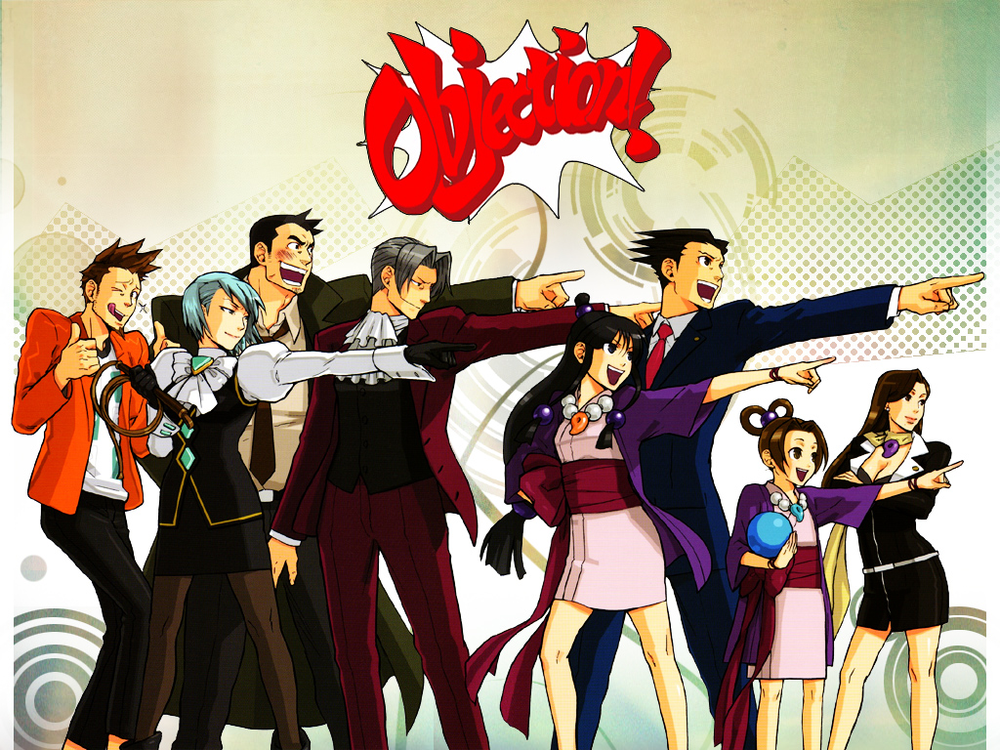

Ace Attorney, known in Japan as Gyakuten Saiban ("Turnabout Trial"), is a series of visual novel adventure video games developed by Capcom. The first entry in the series, Phoenix Wright: Ace Attorney, was released in 2001; since then, nine further games have been released. Additionally, the series has seen adaptations in the form of a live action film and an anime, and has been the base for manga series,drama CDs, musicals and stage plays.
The player takes the roles of the defense attorneys Phoenix Wright, Mia Fey, Apollo Justice and Athena Cykes, and investigates cases and defends their clients in court; they find the truth by cross-examining witnesses and finding inconsistencies between the testimonies and the evidence they have collected. The cases all last a maximum of three days, with the judge determining the outcome based on evidence presented by the defense attorney and the prosecutor. In the spin-off series Ace Attorney Investigations, the player takes the role of prosecutor Miles Edgeworth, and in the spin-off Dai Gyakuten Saiban, they play as Phoenix's ancestor Ryūnosuke Naruhodō.
The series was created by the writer and director Shu Takumi, who wanted the series to end after the third game. The series still continued, with Takeshi Yamazaki taking over as writer and director starting with Ace Attorney Investigations: Miles Edgeworth (2009); Takumi has since returned to write and direct some spin-off titles. While the original Japanese versions of the games are set in Japan, the series' localizations are set in the United States, though retaining Japanese cultural influence. The series has been well received, with reviewers liking the characters and story, and the finding of contradictions; it has also performed well commercially, with Capcom regarding it as one of their strongest intellectual properties.
This is a fan-made site and it will list all of the games that are in the Ace Attorney series and will provide a small description of each game. Enjoy!
